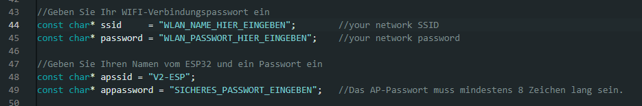

Der ESP32-CAM wird über die Arduino IDE programmiert und gesteuert
Laden Sie die Arduino IDE herunter- Gehen Sie auf https://www.arduino.cc/en/software
- Laden Sie sich die Software für ihr Betriebssystem herunter
- Folgen Sie die Anweisungen des Programms für die Installation
Zu beachten:
Während dem Download werden wichtige Treiber installiert, diese werden benötigt, um auf den ESP32 zugreifen zu können.Anpassung einiger Einstellungen
SPRACHEINSTELLUNG IN ARDUINO IDE
Wenn Sie Arduino IDE auf Deutsch verwenden wollen, führen sie einfach folgende Schritte aus:- Arduino IDE öffnen
- Drücken Sie im Programm ganz oben rechts, auf File [1] und danach auf Preference… [2]
- In den Einstellungen unter Language: Deutsch [3] auswählen
- Mit OK bestätigen
IN DER ARDUINO IDE DEN ESP32-CAM BOARD INSTALLIEREN
Um Software auf den ESP32-CAM hochladen zu können, müssen wir diesen einmalig per Board-Manager hinzufügen:- Unter Zusätzliche Boardverwaltung-URLs: [*] fügen Sie diesen Link ein: https://dl.espressif.com/dl/package_esp32_index.json
- Speichern Sie die Einstellungen mit OK.
- In der Menü-Leiste klicken Sie auf Werkzeuge > Board > Board-Verwaltung...
- Im neu geöffneten Fenster BOARD-VERWALTUNG klicken Sie auf das Textfeld mit Filtern Sie ihre Suche…
- Geben Sie im Textfeld "esp32" ein und installieren Sie die Bibliothek namens „esp32 von Espressif Systems“
- Nach erfolgreicher Installation können Sie nun ihr ESP32-CAM per TTL-Schnittstelle programmieren.
Installation der Teachable Maschine Software auf ESP32
Falls Sie die Software zur Benutzung der ESP32-CAM neuinstallieren müssen
Laden Sie den Code für den ESP32-CAM Teachable Maschine herunter
- Gehen Sie auf https://github.com/spe-khe/Gadget-TeachableMachine
- Klicken Sie auf den grünen Code-Button und drücken Sie dann auf "Download Zip"
- Öffnen Sie die heruntergelade Zip-Datei und entpacken Sie diese (mit den Rechtsklick auf den ZIP Ordner und dann auf "Alle extrahieren…" klicken)
- Ein neues Fenster mit gleichnamigem Ordner sollte sich öffnen – klicken Sie auf dieses und öffnen Sie den Ordner SPE_Tensflow_ESP32-Cam. Die dort liegende .ino Datei öffnen Sie mit einem Doppelklick.
Konfiguration anpassen
Die Software benötigt Internetzugriff und muss sich in ein ihm bekanntes Netzwerk anmelden, um sein Dashboard per WLAN freizugeben.
Ersetzen Sie in der Arduino IDE ab Zeile 44 "WLAN_NAME_HIER_EINGEBEN" und geben Sie den Namen ihres WLAN-Routers an. Auch benötigt wird das Passwort von ihrem Router / AP - ersetzten Sie "WLAN_PASSWORT_HIER_EINGEBEN" (Zeile 45) dadurch.
Zur Wiedererkennung des ESP32 und für die erleichterte Benutzung des ESP32-CAM ohne Anschluss an Arduino IDE können Sie dem ESP-32 einen Namen geben. Diesen können Sie in Zeile 48, statt "V2-ESP" ersetzen.
Optimal können Sie im Feld "SICHERES_PASSWORT_EINGEBEN" noch ein Passwort setzen.
Programm auf den ESP32-CAM Hochladen
Wenn Sie die Konfigurationen abgeschlossen haben, stecken Sie eine Steckbrücke auf die Stiftleiste J1 am Gadget (im Bild oben) und verbinden Sie das Gerät per USB an ihren PC / Laptop.
In Arduino IDE finden Sie oben rechts die Schaltfläche "Board auswählen". Klicken Sie auf diese und drücken Sie auf "Wähle ein anderes Board und einen anderen Port".
Falls ihnen ein Port mit einer COM-Verbindung angezeigt wird, können sie diesen auswählen und den unteren Schritt überspringen.
Wählen Sie im Fenster "Anderes Board und Ports wählen" Unter "BOARDS" den "AI Thinker ESP32-CAM" und unter PORTS ihren verfügbaren Serial Port (USB) aus.
Zuletzt müssen Sie nur noch mit OK die Einstellungen speichern.
Der ESP32-CAM sollte nun erkannt und startklar für den Upload sein.
Mit einem Klick auf den Uploadknopf, können Sie nun die Software auf den Mikrokontroller hochladen.
Wenn Arduino IDE die Software ohne Probleme kompiliert hat, sollte sich ein Konsolenfenster öffnen, in welchem Sie den Fortschritt vom Hochladen sehen sollten.
Falls dort „Connecting….…._____...._____....“ angezeigt wird (und kein Fortschritt zu erkennen ist) drücken Sie auf der Rückseite des ESP32 den Knopf (aus dem Bild zu entnehmen) einmal und probieren Sie das Hochladen erneut. Sollte sich der ESP32-CAM nochmal dort verhangen und ein Time out erzeugen, dann prüfen Sie die Brücke über dem TXD-Anschluss (Bild 1) ob diese richtig angeschlossen ist.
War der Download erfolgreich meldet die Konsole:
Leaving…
Hard resetting via RTS pin…
Entfernen Sie nun die zuvor angesteckte Brücke.